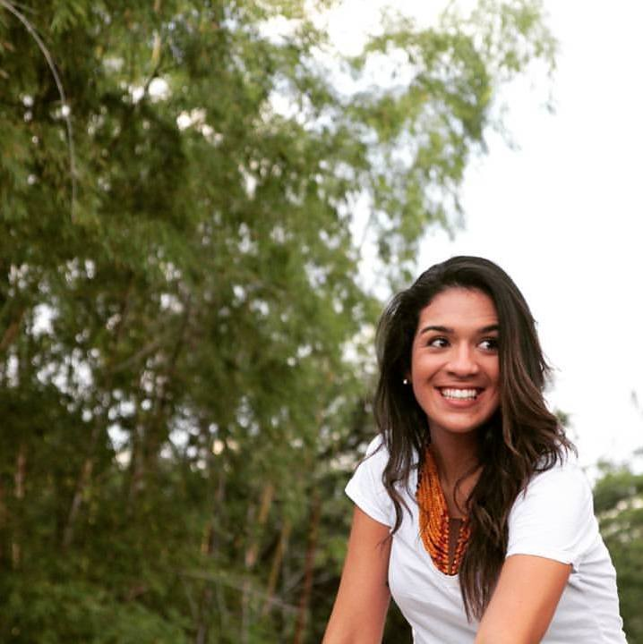
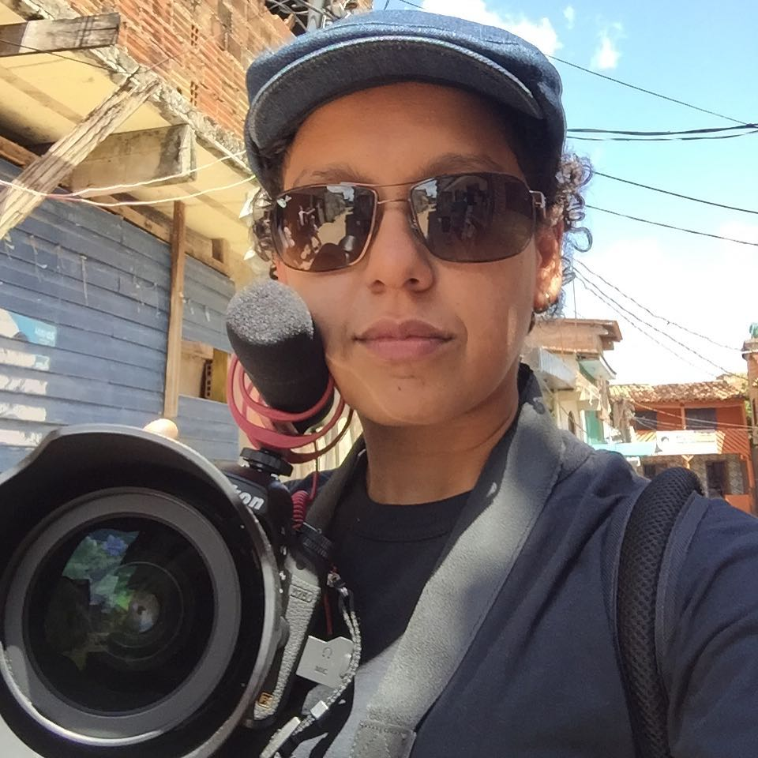
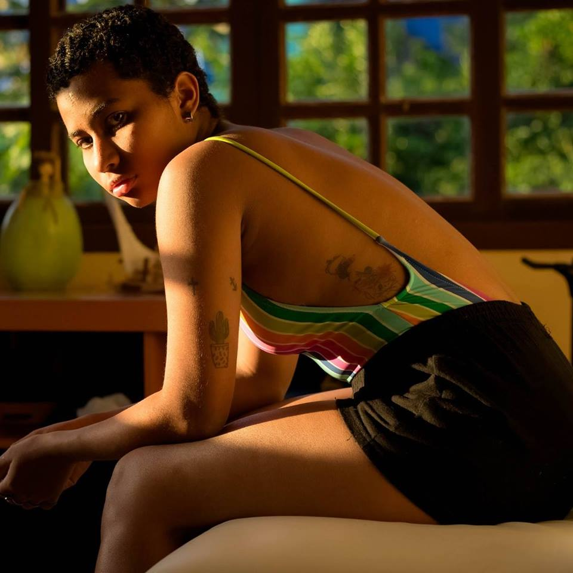
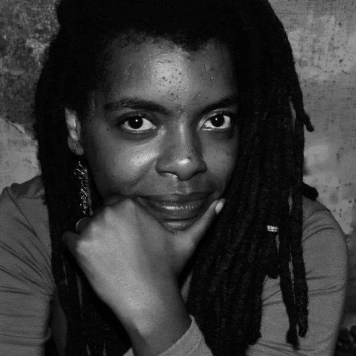
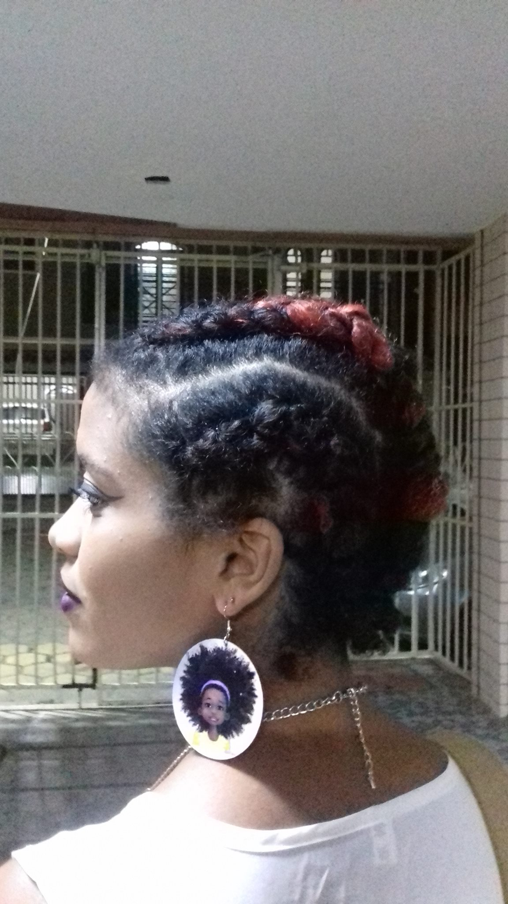
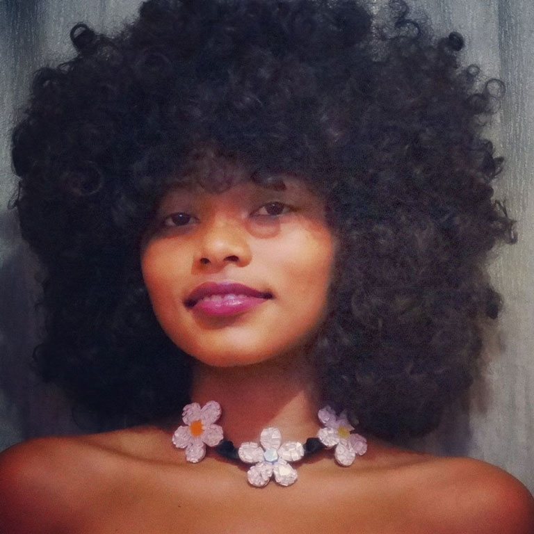
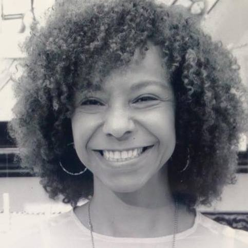
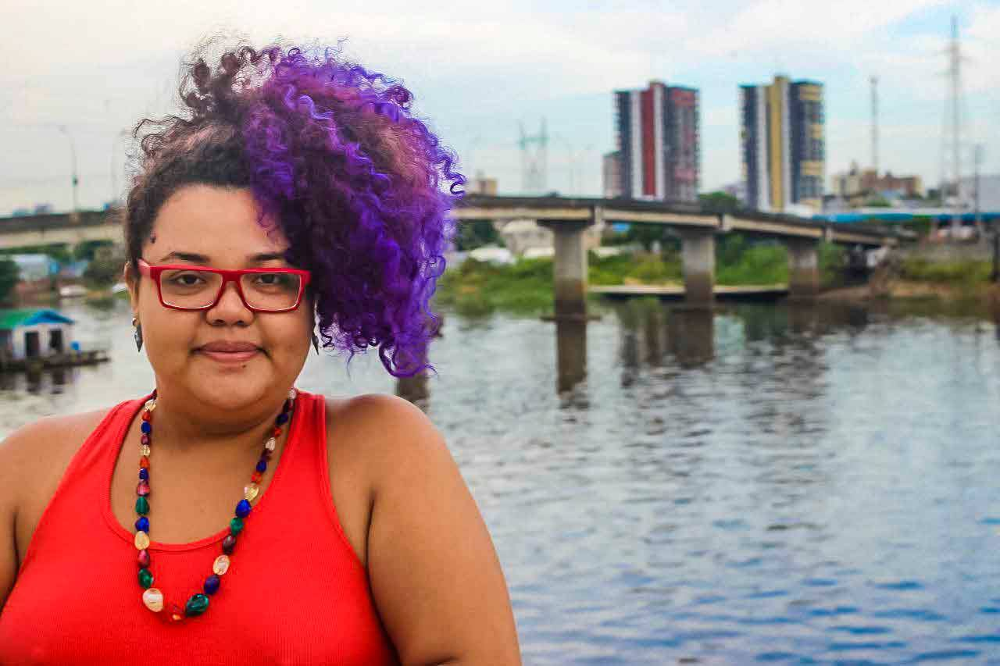
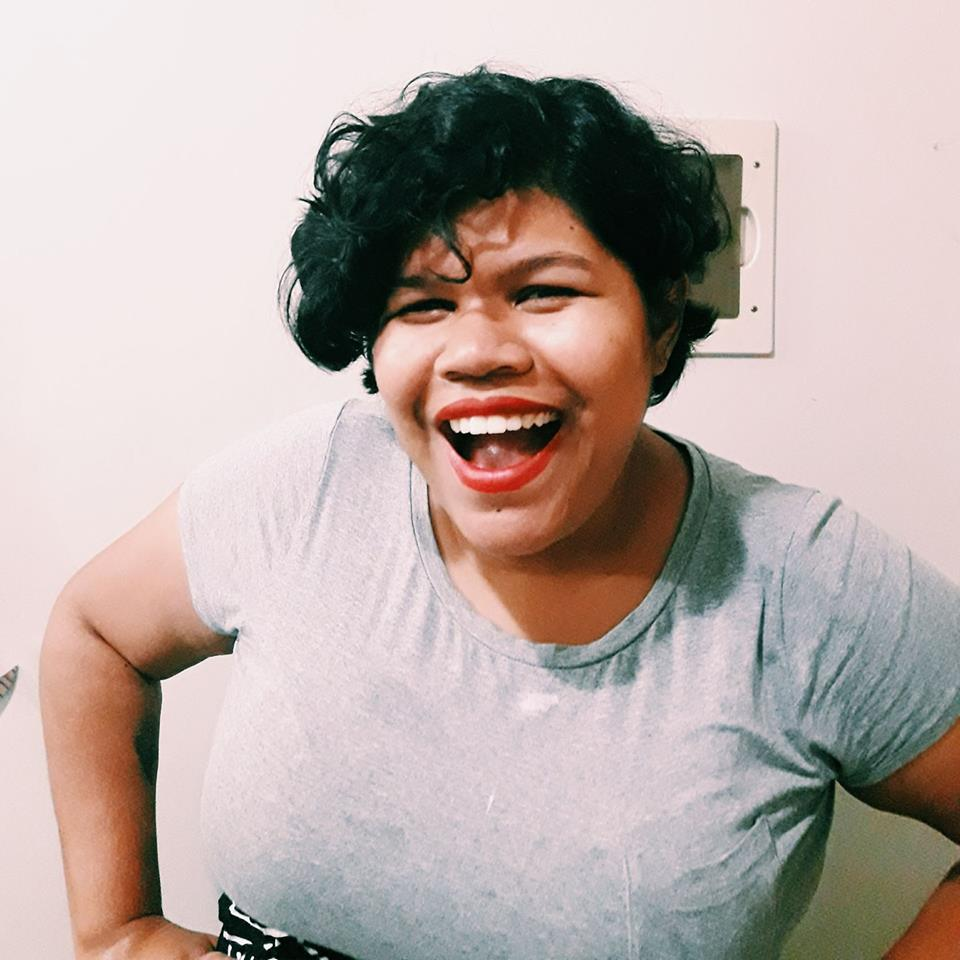
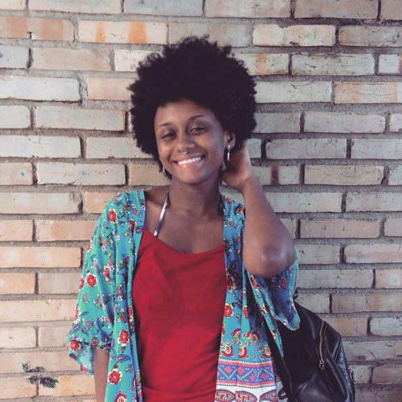

Funções / Roteiro
As informações de cada perfil são de responsabilidade das profissionais.
Você quer conhecer profissionais de quais estados?
Marcar/Desmarcar todos
CARREGANDO ...
 Amanda Duarte (AL)
Amanda Duarte (AL)
Amanda Duarte
Maceió (AL)
amandad.mov@gmail.com
Comunicadora social com habilitação em Jornalismo, graduada pela Universidade Federal de Alagoas. Começou a se aproximar do Cinema e do Audiovisual em 2012 e, desde então, tem atuado nas áreas de produção, difusão e formação. É feminista, idealista social e militante cultural.
http://amandaduarte.jor.br
Outras atividades de Amanda Duarte
Assistência de Produção
|
Direção |
Exibição
|
Oficinas e cursos livres |
Programação e curadoria
Amostra de vídeo
 Amanda Lopes (SP)
Amanda Lopes (SP)
Amanda Lopes
34 anos | São Paulo (SP)
amanda_lopes0@hotmail.com
Formada em Administração de Empresas e professora de matemática. Atuei por 10 anos na área de Recursos Humanos. Graduanda do último ano em Comunicação Social com ênfase em Cinema. Persistente, bastante curiosa e proativa. Me sinto uma eterna aluna. Crio histórias há 20 anos, porém somente nos últimos 4 anos encarei o cinema e pude participar de mais de 25 curtas metragens. FIES, zero recursos, muita fé e alguns amigos, arrisquei nos meus projetos próprios. Empreendedora atualmente desenvolvo a plataforma Mulheres Audiovisual voltada para distribuição de filmes feitos por mulher e vagas direcionadas a esse público.
http://amandalopesfilmes.wixsite.com/portfolio
Outras atividades de Amanda Lopes
Assistência de Direção |
Captação de Recursos |
Coordenação de Projeto |
Direção |
Edição |
Exibição |
Oficinas e cursos livres
|
Produção |
Programação e curadoria
Amostra de vídeo
 Anna Paula Furtado (SP)
Anna Paula Furtado (SP)
Anna Paula Furtado
21 anos | São Paulo (SP)
furtadoannapaula@gmail.com
Estou no oitavo semestre da faculdade de Cinema. Dirijo e faço o roteiro do meu TCC, um documentário sobre resistência feminina no Samba. Busco atuar nessas áreas, de cultura popular e questões de gênero e raça. Estou no começo da minha carreira mas sonho grande e não paro quieta, estou sempre à disposição!
Outras atividades de Anna Paula Furtado
Continuidade |
Direção |
Fotografia Still |
Produção
Amostra de vídeo
 Bea Gerolin (PR)
Bea Gerolin (PR)
Bea Gerolin
23 anos | Curitiba (PR)
beagerola@gmail.com
Bea Gerolin é realizadora, roteirista e diretora.
Outras atividades de Bea Gerolin
Cineclubismo |
Direção |
Direção de Arte |
Oficinas e cursos livres
|
Pesquisa e desenvolvimento
Amostra de vídeo
 Beatriz Lima (RJ)
Beatriz Lima (RJ)
Beatriz Lima
22 anos | Rio de Janeiro (RJ)
beatriz@caseirasproducoes.art.br
Olá. Sou estudante universitária de cinema na UFF, trabalho no mercado como produtora cultural, mas gosto mesmo de assistência de direção e realização de projetos coletivos.
https://www.facebook.com/caseirasprod/?fref=ts
Outras atividades de Beatriz Lima
Direção | Produção
Amostra de vídeo
 Beatriz Vieirah (BA)
Beatriz Vieirah (BA)
Beatriz Vieirah
24 anos | São Félix (BA)
b.vieirah1@gmail.com
Graduanda em Cinema e Audiovisual pela Universidade Federal do Recôncavo da Bahia, ativista negra feminista, fotógrafa, coordenadora e idealizadora do Projeto Seminário Cinema Negro Brasileiro. Tem experiência no cinema e vídeo como filmmaker, assistente de direção, câmera, roteiro e preparação de atores, com destaque para as obras cinematográficas, Lápis de Cor, O Cadeado, Entre Passos, Sinfonia de Uma Pequena Cidade, Noite de Baile, telefilme O milagre dos pássaros e o videoclipe Mau Achismo. Ministrou oficinas de Produção de Vídeo e Cinema Negro. Suas pesquisa gira em torno de Mulheres Negras no Cinema. E atualmente está produzindo o filme Em busca de Lélia, enquanto diretora.
Outras atividades de Beatriz Vieirah
Direção |
Direção de fotografia |
Pesquisa e desenvolvimento |
Oficinas e cursos livres
Amostra de vídeo
 Brenda Ligia Miguel (PE)
Brenda Ligia Miguel (PE)
Brenda Ligia Miguel
Recife (PE)
brenda.ligia@hotmail.com
Formada em Comunicação Social pela Faculdade Oswaldo Cruz/ SP. Cursou Técnico Profissionalizante em Teatro no Macunaíma/SP. Videomaker, ganhou prêmio de Melhor Atriz no festival CinePE 2017 pelo seu curta “Aqui Jaz” (direção, roteiro e montagem). Atuou nos longas “Todas as Cores da Noite” (Pedro Severien), “As Melhores Coisas do Mundo” (Laís Bodanzky), “Sangue Azul” (Lírio Ferreira), “Bruna Surfistinha” (Marcus Baldini), “Bom Dia, Eternidade” (Rogério de Moura). Estreias 2018: “Onde Quer Que Você Esteja” (longa/ Macondo Filmes SP); “Causa Mortis” (curta/ LRJ Filmes PE) e “15 Segundos” (longa/ Pax Filmes RJ). Atuou nas séries de tv “Sob Pressão” (Globo, 2017. Dir.: Andrucha Waddington), “A Mulher do Prefeito” (Globo), “Beleza S/A” (GNT), “9mmSP” (Fox), “Somos Um Só” (Cultura). Estreia em 2018: “África da Sorte” (TV Brasil).
http://brendaligia.blogspot.com.br
Outras atividades de Brenda Ligia Miguel
Atuação |
Direção |
Dublagem |
Edição
Amostra de vídeo
 Carem Abreu (MG)
Carem Abreu (MG)
Carem Abreu
46 anos | Belo Horizonte (MG)
caremabreu@gmail.com
Cineasta, jornalista e capoeirista angoleira. Atuo desde 1996 nos setores Audiovisual e de Culturas Populares como Pesquisadora, Gestora Cultural, Diretora, Roteirista, Produtora Executiva, de Elenco e de Set. Idealizadora da Mostra CineAfroBH.
ATUAÇÃO PROFISSIONAL: ATOS CENTRAL DE IMAGENS. youtube.com/user/atosimagens
Desde 2007: Produtora Executiva, Diretora e Roteirista Atuais 2015: produção executiva do filme e seriado CIDADE DO SOL (Ação, 2015MG, Guto Aeraphe) webseriados.tv (vimeo.com/ondemand/webseriecidadedosol).
PRÊMIO: novembro 2015 Edital de Intercâmbio do MINC > Oficina de Produção Audiovisual em DAKAR, Senegal, na Associação Batuk de Comunicação e Cultura.
http://www.mostracineafrobh.com
Outras atividades de Carem Abreu
Direção |
Exibição |
Ensino superior |
Oficinas e cursos livres |
Pesquisa e desenvolvimento |
Produção |
Produção executiva
Amostra de vídeo
 Carol Rodrigues (SP)
Carol Rodrigues (SP)
Carol Rodrigues
33 anos | São Paulo (SP)
rsscarol@gmail.com
Formada em Ciências Sociais (Unicamp) e em Audiovisual (Usp). Paralelo a graduação, especializou-se como roteirista através de cursos livres em centros culturais. Em 2014, ganhei o edital Curta-Afirmativo, para realizar o curta “A boneca e o silêncio”, sobre a solidão de uma menina ao tomar a decisão de fazer um aborto. O filme participou de diversos festivais nacionais e internacionais, tendo vencido prêmios de Melhor Curta-Metragem em São Paulo, Belo Horizonte, Portugal e na Polônia, além de Prêmio de Melhor direção na Índia e de sido um dos finalistas como Melhor roteiro na Romênia. Foi roteirista e montadora da web série Zona SSP que está em finalização. Integra também a equipe da websérie Empoderadas enquanto roteirista, diretora e editora. Além disso, está na sala de roteiristas de uma série infantil que está sendo produzida pela Mixer-SP e tem lançamento previsto para outubro de 2017.
http://rsscarol.wixsite.com/portfolio
Outras atividades de Carol Rodrigues
Direção |
Oficinas e cursos livres
Amostra de vídeo
Cibele Tenório (DF)
Cibele Tenório
34 anos | Brasília (DF)
cibeletenorio@gmail.com
Sou Cibele Tenório, jornalista com foco em produção audiovisual para TV. Em 2016 fiz com a FGV o curta "Almerinda, a luta continua" que faz um resgate histórico da vida de Almerinda Farias da Gama uma das primeiras militantes feministas brasileiras.
Outras atividades de Cibele Tenório
Direção |
Logger |
Produção
Amostra de vídeo
 Daiane Rosário (BA)
Daiane Rosário (BA)
Daiane Rosário
25 anos | Salvador (BA)
ane_edicaocontato@hotmail.com
Montadora e Produtora há 6 anos, tem no currículo filmes, séries e programas de TV.
Outras atividades de Daiane Rosário
Edição |
Gerência de Mídia |
Oficinas e cursos livres |
Produção

Amostra de vídeo
 Danddara (SP)
Danddara (SP)
Danddara
48 anos | Campinas (SP)
dandarah@rocketmail.com
Carioca, cresce no universo cultural do samba. Premiada no Brasil e EUA, se expressa através do cinema, música, literatura e arte florestal. Inicia a carreira em 1985. Em 1988 funda o Teatro Florestal do RJ. Começa no cinema em 1990, como Prod Exec do longa "Canto da Terra". Em 2000 dirige Gurufim na Mangueira (ficção, 26 min, 35mm) obra que insere a mulher negra como sujeito da narrativa cinematográfica ficcional. Revelada pela HBO/USA como primeira mulher negra cineasta do Brasil.
http://nossoclan.tumblr.com
Outras atividades de Danddara
Atuação |
Coordenação de Projeto |
Direção |
Oficinas e cursos livres
|
Pesquisa e desenvolvimento |
Produção Executiva |
Programação e curadoria
Amostra de vídeo
 Deka Carvalho (SP)
Deka Carvalho (SP)
Deka Carvalho
36 anos | São Paulo (SP)
kilometroprodutora@gmail.com
Sou Deka Carvalho, 36 anos, mãe, preta, favelada, produtora de videos e fotos. Sou responsável pelo audiovisual no estado da CUFA SP (Central Única das Favela de São Paulo) , sou proprietária da produtora Kilômetro na zona leste de São Paulo. Meu objetivo é mostrar o território favela no seu melhor contexto verdadeiro e nos colocarmos como protagonistas em todas as esferas.
https://www.facebook.com/kilometroprodutora/
Outras atividades de Deka Carvalho
Assistência de Direção |
Direção |
Direção de Arte |
Edição |
Exibição |
Pesquisa e desenvolvimento |
Preparação de Elenco |
Produção |
Produção Executiva
Amostra de vídeo
 Ellen Paes (RJ)
Ellen Paes (RJ)
Ellen Paes
33 anos | Rio de Janeiro (RJ)
paes.ellen@gmail.com
Formada em Jornalismo com especialização em Telejornalismo, atuo como repórter e sou diretora de um projeto de documentário em curso, o #agoraéquesãoelas.
Outras atividades de Ellen Paes
Direção
Amostra de vídeo
Fernanda Araujo (SP)
Fernanda Araujo
35 anos | São Paulo (SP)
contato@amusicaria.com.br
Fernanda Araujo, filmmaker, formada em Rádio e TV pela Universidade Metodista desde 2004, especializada em Direção de Fotografia Avançada pela AIC. Atualmente trabalho como videomaker na empresa Salon Line, onde contribuo com a criação de conteúdos para internet e sou responsável pelo criação do conteúdo audiovisual da marca nas redes. Também realizo a produção executiva e/ou coordenação de alguns dos projetos audiovisuais da marca produzidos por terceiros.
Outras atividades de Fernanda Araujo
Captação de Som |
Coordenação de projeto |
Direção |
Direção de fotografia |
Edição |
Mixagem e efeitos sonoros |
Pesquisa e desenvolvimento |
Produção |
Produção executiva
Amostra de vídeo
 Francine Barbosa (RJ/SP)
Francine Barbosa (RJ/SP)
Francine Barbosa
31 anos | São Paulo (RJ/SP)
francinibarbosa@gmail.com
Francine Barbosa é roteirista e educadora. Desenvolveu e ministrou oficinas de audiovisual nos programas Cine Escola Tela Brasil, Fábricas de Cultura, CulturAção e Programa VAI, nos quais orientou a produção de mais de 70 curtas metragens realizados por crianças, adolescentes e adultos. Foi coordenadora do curso Técnico em Direção Cinematográfica - Filmworks da Academia Internacional de Cinema entre 2014 e 2015. Atualmente desenvolve projetos de audiovisual voltados ao público adolescente e adulto, ministra aulas de roteiro e atua como parecerista em editais do FSA e outros órgãos.
https://www.linkedin.com/in/francinebarbosa
Outras atividades de Francine Barbosa
Ensino superior |
Oficinas e cursos livres
Amostra de vídeo
Gabriela Reis (RJ)
Gabriela Reis
20 anos | Rio de Janeiro (RJ)
gabrielacisotoreis@gmail.com
Formada como atriz através de escola técnica profissional. E cursando último período em Fotografia.
Outras atividades de Gabriela Reis
Assistência de Direção |
Assistência de Fotografia |
Atuação |
Direção de Fotografia
Amostra de vídeo
Íldima (PE)
Íldima
35 anos | Recife (PE)
ildima@gmail.com
Pós graduada em Estudos Cinematográficos pela Unicap (PE), Íldima iniciou suas pesquisas sobre linguagem audiovisual ainda no processo de graduação, na Uneb (BA), tendo publicado a tese “Cinema, indústria e história: três momentos do cangaço no cinema brasileiro”, em 2004. Durante 3 anos realizou reflexões cinematográficas em seu blog “Embriaguez da Rapariga”. Em 2016, iniciou seu estudo sobre temporalidade e imagem com o primeiro trabalho titulado “O peso da câmera lenta”. Neste mesmo ano, formou o coletivo “Alastrado produções artísticas” no qual atual como diretora de arte, produtora e assistente de fotografia. Concilia pesquisa sobre a natureza da imagem e produção audiovisual.
https://www.facebook.com/alastrado/
Outras atividades de Íldima
Assistência de direção |
Cineclubismo |
Coordenação de projeto |
Crítica |
Direção de arte |
Oficinas e cursos livres |
Pesquisa e desenvolvimento |
Produção |
Programação e curadoria
Iris Regina (PE)
Iris Regina
31 anos | Olinda (PE)
irisregin@gmail.com
Sou nascida no interior de São Paulo onde fiz faculdade de Artes Visuais, mas estou em Pernambuco desde o ano de 2012, onde fiz algumas especializações na área de designer gráfico e hoje dou aula de educação popular na área. Aqui me apaixonei pelo cinema e logo comecei com o cineclubismo e até hoje faço parte do Cineclube Bamako com foco no cinema africano e diáspora Cursos de Roteiro com Marcelo Paes de Carvalho, Laboratório Audiovisual com Pedro Severien, alguns cursos de captação e fotografia, áudio e produção. Fiz curadoria e juri em alguns festivais do estado como o Festival de Cinema de Triunfo, Recifest, Festicine e a I Semana de Comunicação Popular de Recife. Trabalhei na produção da mostra o CRUA (Cinema Rural Andarilho) que aconteceu em algumas cidades do interior de Pernambuco e Paraíba, também na mostra Olhar do Alto no Festival Olinda Coco Zumbi. Integro a produtora Studio Ru@ do CCJ-Recife (Centro de Comunicação e Juventude).
Outras atividades de Iris Regina
Assistência de Direção |
Assistência de Fotografia |
Cineclubismo |
Continuidade |
Design gráfico |
Direção |
Pesquisa e desenvolvimento |
Programação e curadoria
Amostra de vídeo
Isabela Aquino (RJ)
Isabela Aquino
22 anos | Rio de Janeiro (RJ)
isabelaaquinos@gmail.com
Formanda em Cinema e Audiovisual pela UFF, com experiência em roteiro, direção e produção de curtas-metragens, e edição de vídeo.
http://vimeo.com/isabelaaquino
Outras atividades de Isabela Aquino
Edição
|
Pesquisa e desenvolvimento |
Produção
Amostra de vídeo
 Izabel Neiva (SP)
Izabel Neiva (SP)
Izabel Neiva
40 anos | Guarulhos (SP)
izabel_neiva@hotmail.com
Sou Bacharel em Artes Cênicas pela Escola Celia Helena, licenciada em artes com habilitação em teatro pela Faculdade Paulista de Artes, MBA pós graduada em cinema pela Lafilm Institute, técnica em atuação e direção pelo Inst Stanilavisk. Trabalhos: Assist Direção Longa metragem Off Line, Direção/Produção e atuação curta A Utima Chance, Direção e Produção Curta O Menino da moeda (proj em fase de captação). Dezenas de curtas como atriz, no teatro trabalhei com os diretores: Marco Antônio Brás, Claudia Schapira, Bete Dorgam, Simone Boer.
Outras atividades de Izabel Neiva
Assistência de Direção |
Atuação |
Continuidade |
Direção |
Preparação de Elenco |
Produção
Amostra de vídeo
Jamila Terra (DF)
Jamila Terra
Guará (DF)
jamila.oliveiraterra@gmail.com
Eu me chamo Jamila Terra, sou graduada em Cinema e mídias digitais no Distrito Federal. Dentro da faculdade eu tive a oportunidade de estar dentro de vários sets em várias funções distintas, aonde consegui ter um espaço e algum nível de capacitação para fazer uma co-produção/co-direção com um outro diretor, além de realizar o derradeiro filme. Ainda que eu seja uma recém-formada me considero em uma crescente evolução profissional em relação ao audiovisual.
Outras atividades de Jamila Terra
Assistência de direção |
Cenografia |
Cineclubismo |
Continuidade |
Direção |
Direção de arte |
Dublagem |
Edição |
Figurino |
Gerência de mídia |
Preparação de elenco |
Produção
Amostra de vídeo
 Jaqueline M. Souza (PR/SP)
Jaqueline M. Souza (PR/SP)
Jaqueline M. Souza
30 anos | Curitiba (PR) e São Paulo (SP)
jaque.jmsouza@gmail.com
Jaqueline M. Souza é formada em Cinema pela FAP. Ganhou o Prêmio do Júri no 8° Curta Santos pelo videoclipe Dos Amores Mais Vendidos. Roteirizou a animação Julieta de Bicicleta, indicada ao Prêmio Brasil de Cinema Infantil, ao Prix Jeunesse Ibero Americano /ComKids e ganhadora do Prêmio de Público no Festival Divercine. Contribuiu com textos, curadoria ou mediações para mostras como Trilogia Flamenca, Ciclo Vicent Price e Tati por Inteiro, realizadas pelo Sesc Paraná. Em 2015, fundou a Tertúlia Narrativa, espaço colaborativo de criação e aprimoramento de roteiros. Em 2016, assinou a produção executiva dos curtas A Noite Púrpura e Meu Querido Camaleão, selecionado no Anima Mundi.
http://www.tertulianarrativa.com
Outras atividades de Jaqueline M. Souza
Oficinas e cursos livres |
Produção executiva
Amostra de vídeo
 Jessica Figueiró (SP)
Jessica Figueiró (SP)
Jessica Figueiró
23 anos | São Paulo (SP)
figueiroh@outlook.com
Olá, sou a Jessica, nascida e moradora da zona leste de São Paulo. Tenho técnico de design gráfico e cursos de computação gráfica. Ao escolher minha graduação, decidir unir minha paixão por design/ilustração com a de cinema, e escolhi Animação. Participei de algumas masterclass de animação e fiz um curso de Teoria e Estilos Cinematográficos com Pablo Villaça. Até o momento só trabalhei com design, direção de arte e ilustração. Meus trabalhos de audiovisual foram realizados até agora somente na faculdade. Atualmente estou finalizando um curso de Front End, no qual pretendo fazer mais uma ponte entre minhas paixões.
http://flickr.com/jessicafigueiro
Outras atividades de Jessica Figueiró
Animação |
Correção de cor |
Desenho de efeitos |
Direção de arte |
Edição

Amostra de vídeo
 Josy Macedo (CE)
Josy Macedo (CE)
Josy Macedo
35 anos | Fortaleza (CE)
josy.macedo@gmail.com
É graduanda em Cinema e Audiovisual pela Universidade Federal do Ceará. Possui graduação em Administração de Empresas; pós-graduação em Gestão de Organizações do Terceiro Setor; e pós-graduação em Gestão Pública Municipal. No âmbito da cultura, é produtora cultural desde 2005, quando iniciou a carreira como atriz e produtora teatral. No cinema, dirigiu o curta "Estamos Bem?", produziu os curtas "21m" e "Um Assunto Meio Delicado", o cineclube Cine Rebuceteio e também participou da produção da Mostra Cine Nordeste.
Outras atividades de Josy Macedo
Atuação |
Audiodescrição |
Cineclubismo |
Direção |
Direção de arte |
Oficinas e cursos livres |
Pesquisa e desenvolvimento |
Produção |
Produção executiva
Amostra de vídeo
Joyce Cursino (PA)
Joyce Cursino
21 anos | Belém (PA)
joycecristina.cursino@gmail.com
Atriz, apresentadora e roteirista negra, nortista, amazônida. Com sede do mundo!
Outras atividades de Joyce Cursino
Atuação
Amostra de vídeo
 Juliana Lima (PE)
Juliana Lima (PE)
Juliana Lima
Recife (PE)
juliana.cine.musica@gmail.com
É realizadora audiovisual, Vice-presidente da ABD-PE/APECI e integrante do Mulheres no Audiovisual de Pernambuco (MAPE), onde realiza vídeos sobre demandas de gênero e raça. Escreve e dirige roteiros para documentários e vídeo clipes. Seu primeiro documentário em curta-metragem, Psiu! (2014), em que assina argumento, codireção e roteiro, recebeu vários prêmios de melhor filme em diversos festivais pelo Brasil. Seu clipe, Show de Rock (2015), com o rapper Galo de Souza foi premiado pelo FestClip (SP). Atualmente cursa Mestrado em Educação na UFPE e está na produção do seu próximo documentário.
Outras atividades de Juliana Lima
Coordenação de Projeto |
Direção |
Pesquisa e desenvolvimento |
Produção
Amostra de vídeo
Lena Roque (SP)
Lena Roque
50 anos | São Paulo (SP)
lenaroque48@gmail.com
O que nos cabe é viver. Contribuir para um mundo melhor, mais justo quem sabe... escrever, dirigir, atuar, ler, sonhar, realizar. Sou mulher, negra, sem parentes importantes. Vivo em luta por um espaço, um lugar "ao sol", quem sabe um reconhecimento. Ampliar meu espaço e assim transmitir minhas idéias. Roterizar, contar histórias. A minha bem contada faz chorar, quem sabe é um começo.
Outras atividades de Lena Roque
Atuação |
Ensino superior |
Locução |
Oficinas e cursos livres
|
Pesquisa e desenvolvimento |
Preparação de elenco
Amostra de vídeo
 Lia Letícia (PE)
Lia Letícia (PE)
Lia Letícia
41 anos | Recife (PE)
lia.leticia@gmail.com
Além de escrever e dirigir seus próprios filmes, trabalha como diretora de arte. É educadora no projeto de educação audiovisual para crianças Escola Engenho e no Tardes de Quintal/Recife. Também é curadora e coordena o Cinecão, plataforma de exibição de trabalhos hibrídos em audiovisual, além de projetos independentes de arte na Maumau|Recife.
https://www.youtube.com/channel/UC3V5nfblgaqKdKy-XZj3ymA?view_as=public
Outras atividades de Lia Letícia
Cenografia |
Cineclubismo |
Coordenação de projeto |
Direção |
Direção de arte |
Edição |
Figurino |
Oficinas e cursos livres
|
Pesquisa e desenvolvimento |
Produção |
Programação e curadoria
Amostra de vídeo
 Lidia dos Anjos (CE)
Lidia dos Anjos (CE)
Lidia dos Anjos
30 anos | Fortaleza (CE)
liddya1@gmail.com
Atriz , graduanda em Teatro pela UFC. Figurinista e costureira. Na Cia Cearense de Molecagem atuei em seus espetáculos infantis. Participei de espetáculos como Cale-se, com o Seres de Teatro, grupo que ainda atuo. Experimento I, foi trabalho totalmente autoral do grupo ETIPI do qual fui fundadora em 2013. Outros espetáculos: Disfarça, meu bem; Cidade sem Nome, etc. Performances: Carandiru pra Quem?;Bandido bom é Bandido Morto, Pátria Amada com Margens Urbanas ( grupo de intervenção que sou membro) Figurino: Disfarça, Meu bem; Cidade sem nome; Experimento I, Cale-se. Figurino e Arte em curtas Salto 15, VS EX SR tristeza com o Coletivo Descabelo. Preparação de elenco: Curta, Iracema.
Outras atividades de Lidia dos Anjos
Assistência de direção |
Atuação |
Direção de arte |
Figurino |
Oficinas e cursos livres |
Pesquisa e desenvolvimento |
Preparação de elenco
Amostra de vídeo
 Lilian Santiago (SP)
Lilian Santiago (SP)
Lilian Santiago
46 anos | Salto (SP)
lilianssantiago2014@gmail.com
Lilian Solá Santiago é historiadora e Mestre e Integração da América Latina pela USP (Universidade de São Paulo) e atua há mais de 15 anos na área de produção e ensino audiovisual. Atualmente é professora-cineasta do curso de Cinema do CEUNSP - Centro Universitário Nossa Senhora do Patrocínio – Salto /SP, onde coordena a Produtora Experimental do curso, a Kimera Filmes. Entre suas realizações audiovisuais estão os documentários "Fios do Passado" (2015), “Batuque de Graxa” (2012); “Eu tenho a palavra” (2010) ; "Roda o Tereré" (2009); o doc-ficção “Graffiti” (2008); “Balé de Pé no Chão”(2006) e o filme documentário “Família Alcântara” (2005), com Daniel Santiago.
Outras atividades de Lilian Santiago
Direção |
Ensino superior |
Produção
Amostra de vídeo
 Lívia Uchôa (RJ)
Lívia Uchôa (RJ)
Lívia Uchôa
30 anos | Niterói (RJ)
liviamsu@gmail.com
Formada em montagem no curso regular, com duração de 3 anos, da EICTV, a Escola de Cinema de Cuba. Dirige filmes independentes desde 2011.
http://liviamsu.portfoliobox.net/
Outras atividades de Lívia Uchôa
Correção de cor |
Direção |
Edição
Amostra de vídeo
 Lucinete Morais (GO)
Lucinete Morais (GO)
Lucinete Morais
37 anos | Goiânia (GO)
moraislucinete1@gmail.com
Antropóloga e gestora cultural em formação como realizadora audiovisual.
http://web.facebook.com/moraislucinete
Outras atividades de Lucinete Morais
Captação de recursos |
Coordenação de projeto |
Direção |
Ensino superior |
Oficinas e cursos livres |
Pesquisa e desenvolvimento |
Produção |
Produção executiva
Amostra de vídeo
 Luma Reis (SP)
Luma Reis (SP)
Luma Reis
28 anos | Santo André (SP)
lumareis@gmail.com
Profissional com Bacharelado em Produção e Política Cultural e Tecnólogo em Produção Audiovisual. Larga experiência profissional em: Elaboração de projeto, cronograma, coordenação de equipe e programação, programação audiovisual, curadoria e exibição de curtas-metragens, logística de produção (contato com artistas, produção de locação), controle de avaliação, contato com realizadores, entre outras. Perfil: Organizado, eficiente e prático.
https://br.linkedin.com/in/lumareis
Lattes: http://lattes.cnpq.br/1269210251962783
Outras atividades de Luma Reis
Produção
Amostra de vídeo
 Maíra Zenun (DF)
Maíra Zenun (DF)
Maíra Zenun
34 anos | Brasília (DF) e Lisboa (Portugal)
mairazenun@yahoo.com.br
Fotógrafa e investigadora, com formação nas áreas da sociologia e do cinema, desde 2007 desenvolvo trabalho autoral e coletivo, em imagens, vídeos e textos poéticos, expostos em coleções privadas, publicações impressas, virtuais, festivais, mostras, livros e blogs.
http://floresdemaiomairazenun.blogspot.br
Outras atividades de Maíra Zenun
Cineclubismo |
Direção de Fotografia |
Oficinas e cursos livres |
Pesquisa e desenvolvimento |
Produção
Amostra de vídeo
 Mariana Luiza (RJ)
Mariana Luiza (RJ)
Mariana Luiza
36 anos | Rio de Janeio (RJ)
mariana.luiza@globo.com
Graduada em roteiro pela New York Film Academy (2008), Mariana roteirizou e dirigiu A B Ser (doc 52min). O projeto foi vencedor, dentre 115 roteiros inscritos, do concurso de Roteiros Filma Brasil. Na literatura, recebeu diversos prêmios, incluindo o melhor conto, dentre 265 trabalhos, na IV Concurso Literário Internacional de Contos, promovido pela Associação de Arte e Cultura de Salzburg, Áustria (2006), e o prêmio pela melhor compilação de roteiros, dentre 3000 inscrições no Torneio da Criação Escreva como Eça (2001), promovido pela Globo.com. Recentemente, roteirizou e dirigiu Casca de Baobá (ficção 12min). O roteiro foi contemplado no Edital do SAv/Minc Curta Afirmativo 2014.
http://www.marabertofilmes.com
Outras atividades de Mariana Luiza
Direção |
Pesquisa e desenvolvimento |
Produção
Amostra de vídeo
 Mariani Lima (SP)
Mariani Lima (SP)
Mariani Lima
25 anos | Campinas (SP)
mariani_lima@hotmail.com
Formada em Cinema e Audiovisual na UFPel, atualmente trabalho como cinegrafista e editora freelancer em Campinas. Também sou Audiodescritora certificada.
http://www.vimeo.com/mariani
Outras atividades de Mariani Lima
Assistência de Direção |
Atuação |
Direção |
Direção de Fotografia |
Edição |
Fotografia Still |
Oficinas e cursos livres
Amostra de vídeo
Michelle Andrews (AM)
Michelle Andrews
32 anos | Manaus (AM)
michelleandrewsdifusao@gmail.com
Michelle Andrews, manauara, é produtora cultural, videomaker, fundadora do Coletivo Difusão (AM), autodidata atua em projetos socioculturais e ambientais desde 2004. Ministrou oficina e workshops no campo da produção audiovisual. Elabora e executa projetos de diversas linguagens desenvolvidos em território brasileiro, em especial na região Amazônica. Atualmente é coordenadora da MIVA: Mostra Internacional de Videodança, Semana do Audiovisual em Manaus e Centro Popular do Audiovisual
https://www.facebook.com/michelleandrewsnorte
Outras atividades de Michelle Andrews
Captação de Recursos |
Cineclubismo |
Edição |
Oficinas e cursos livres
Amostra de vídeo
Mila Teixeira (RJ)
Mila Teixeira
24 anos | Rio de Janeiro (RJ)
mila.txrlm@gmail.com
Sou estudante de Audiovisual na UFRJ e atualmente estagio na área de produção do Canal GNT. Como roteirista, atuei em diversos filmes, sendo o mais relevante o curta Mercadoria, exibido em Cannes e com o qual fui contemplada com o prêmio Cine Tamoio de melhor roteiro.
Outras atividades de Mila Teixeira
Produção
Amostra de vídeo - senha: mercadoria2017
 Monique Rodrigues (RJ)
Monique Rodrigues (RJ)
Monique Rodrigues
Rio de Janeiro (RJ)
monique010982@gmail.com
Sou formada em Cinema com especializações em roteiro e pesquisa, tendo experiência em festivais, mostras, curta metragens e produção de conteúdo para web.
Outras atividades de Monique Rodrigues
Cineclubismo |
Coordenação de Projeto |
Crítica |
Direção |
Direção de Arte |
Pesquisa e desenvolvimento |
Produção |
Programação e curadoria
Amostra de vídeo
Nádia Maria Santos Ribeiro (MA)
Nádia Maria Santos Ribeiro
28 anos | São Luís (MA)
nadiaspielberg@hotmail.com
Sou formada em Administração Bacharelado e graduando-me em História Bacharelado. Já produzi dois filmes, o primeiro um curta com ajuda da família e amigos e que foi selecionado para 4 festivais, dentre eles: Curta Canoa. O segundo foi produzido através de Edital da Futura, consegui fazer um documentário que é o meu TCC. Atualmente sou estudante de Cinema e com várias ideias para tirar do papel. Dentro do cinema as áreas que mais gosto: Roteiro e Direção e gostaria de especializar-me principalmente na área de Roteiro.
Outras atividades de Nádia Maria Santos Ribeiro
Direção
Amostra de vídeo
 Natalie Matos (MG)
Natalie Matos (MG)
Natalie Matos
21 anos | Belo Horizonte (MG)
natalie.m.moura@gmail.com
A única certeza que mora em mim é a de que a cada passo aprendo algo novo e construo minha identidade. Como uma árvore que cresce regada ao amor e às dificuldades, dá bons frutos e flores, mas também amadurece antes da hora e às vezes até mesmo cai, mas, sempre lembra que tudo que se vive fortalece suas raízes. E sempre quando eu precisar vou ao meu interior e discuto comigo, para entender esse meu eu que às vezes recusa falar e prefere apenas sentir. Gradua em Cinema e Audiovisual e Técnico em Artes Visuais, hoje tenho projetos de visibilidade ao protagonismo da mulher preta e a juventude periférica.
http://nataliem-moura.wixsite.com/nataliematos
Outras atividades de Natalie Matos
Animação |
Assistência de Direção |
Captação de Recursos |
Captação de Som |
Cenografia |
Continuidade |
Correção de cor |
Direção |
Direção de Arte |
Direção de Fotografia |
Edição |
Fotografia Still |
Iluminação |
Mixagem e efeitos sonoros |
Pesquisa e desenvolvimento |
Preparação de Elenco |
Produção
Amostra de vídeo
 Pricilla Costa (PA)
Pricilla Costa (PA)
Pricilla Costa
23 anos | Belém (PA)
costa.pricilla@hotmail.com
Idealizadora e Fundadora do Coletivo Audiovisual Tudo Preto!, em Belém do Pará.
Outras atividades de Pricilla Costa
Assistência de fotografia |
Continuidade |
Direção |
Direção de fotografia
Amostra de vídeo
 Priscila Oliveira (SP)
Priscila Oliveira (SP)
Priscila Oliveira
28 anos | Valinhos (SP)
priscifch@gmail.com
Sou formada em Ciências Sociais e Midialogia, pesquiso direção de criança para cinema no curso Mestrado em Artes da Cena. Minha formação e experiências estão voltadas para roteiro e direção, mas gosto de ampliar meus conhecimentos teóricos e práticos em outras áreas do audiovisual. Também tenho interesse em trabalhos que envolvam o negro e a mulher no cinema (na frente e atrás da câmera), principalmente em relação à construção de personagens.
https://www.facebook.com/ameiavista
Outras atividades de Priscila Oliveira
Assistência de Direção |
Direção |
Ensino superior |
Figurino |
Fotografia Still |
Gerência de Mídia |
Oficinas e cursos livres |
Pesquisa e desenvolvimento |
Preparação de Elenco |
Produção |
Programação e curadoria
Amostra de vídeo
 Prix Clementino (RJ)
Prix Clementino (RJ)
Prix Clementino
30 anos | Rio de Janeiro (RJ)
sanclepriscila@gmail.com
Estudei Comunicação Social - Jornalismo, na PUC-Rio. Comecei a vida profissional trabalhando com produção, na produtora No Ar Comunicação, de Alice Maria Reininger, renomada jornalista e principal responsável pela criação do Globo News. Trabalhando como assistente de direção e produtora de reportagem, no Programa Especial, da TV Brasil. E no Programa Mãe & Cia, do GNT. Tendo sido assistente da diretora Angela Patrícia Reiniger -Três Irmãos de Sangue (2006), durante 5 anos. Paralelamente, realizei trabalhos como freelancer de direção, produção, repórter e roteiro, atuando em vídeos clipes, vídeos institucionais e trabalhos de produção local e produção de reportagem.
Outras atividades de Prix Clementino
Assistência de Direção |
Cineclubismo
|
Direção |
Pesquisa e desenvolvimento |
Produção
Amostra de vídeo
 Quézia Lopes (RJ)
Quézia Lopes (RJ)
Quézia Lopes
29 anos | Niterói (RJ)
queziamaria@yahoo.com.br
Bacharela em Cinema e Audiovisual pela Universidade Federal Fluminense (UFF), com experiência como diretora, roteirista, produtora, editora e assistente de direção e de produção, no cinema e audiovisual independentes.
Quézia Lopes's Portfólio
Outras atividades de Quézia Lopes
Assistência de Direção |
Cineclubismo |
Coordenação de Projeto |
Crítica |
Direção |
Edição |
Pesquisa e desenvolvimento |
Produção |
Programação e curadoria
Amostra de vídeo
 Renata Martins (SP)
Renata Martins (SP)
Renata Martins
São Paulo (SP)
recine12@gmail.com
Formada em cinema pela universidade Anhembi Morumbi e Pós - Graduada em linguagens da Arte | USP. Diretora e Roteirista do Curta - Aquém das Nuvens / Roteirista da Série Pedro e Bianca. / Idealizadora, Roteirista e Diretora da Websérie Empoderadas. / Dramaturga do Espetáculo - IDA - Coletivo Negro. / Coordenadora e Roteirista do Projeto - RUA NOVE / Coordenadora de desenvolvimento do projeto - Cartas da Terra do Futuro - Websérie sobre Refugiados.
http://www.facebook.com/programaempoderadas/
Outras atividades de Renata Martins
Direção
Amostra de vídeo
Sassá Souza (SC)
Sassá Souza
Florianópolis (SC)
sa.souzasss@gmail.com
Ativista Cineclubista Negra, fez parte do Cineclube Mate com Angu de onde saiu para fundar com outras feminista da Baixada Fluminense do RJ o Facção Feminista Cineclube. Antes disso lutou pela Pedagogia Libertária e implementação da Lei 10639/03 na cidade de Pelotas, no sul do RS junto ao Coletivo Negada, onde trabalhava com Educação Escolar Quilombola e Desenvolvimento Étnico Racial. Atualmente mora em Florianópolis -SC trabalhando na Secretaria de Ações Afirmativas e Diversidade da Universidade Federal de Santa Catarina e ativa o CineClube Ekô.
Outras atividades de Sassá Souza
Cineclubismo |
Edição |
Gerência de Mídia |
Produção |
Programação e curadoria
Amostra de vídeo
 Tais Amordivino (BA)
Tais Amordivino (BA)
Tais Amordivino
25 anos | Salvador (BA)
contatotaisamordivino@gmail.com
Graduanda em Comunicação Social com ênfase em Cinema e Vídeo. Estudou direção de Cinema e Televisão na Escola Baiana de Cinema (EBACINE). Idealizadora do grupo "A Mulher Negra e o Cinema" criado em 2015. Em 2016 Dirigiu, roteirizou e produziu o documentário "A Invisibilidade da Identidade Negra na Educação", foi Assistente de Direção no curta-metragem "O Brinde" de Rubens Shinkai; Dirigiu, roteirizou e montou o curta-metragem "Caos"; Fez câmera no documentário “A Maestrina da Favela” de Falani Afrika (2016); Dirigiu “ A trajetória das Cineastas Baianas” documentário(2017).
Outras atividades de Tais Amordivino
Assistência de direção |
Assistência de fotografia |
Cinegrafia |
Direção |
Pesquisa e desenvolvimento |
Produção executiva
Amostra de vídeo
 Thais Scabio (SP)
Thais Scabio (SP)
Thais Scabio
39 anos | São Paulo (SP)
thaisscabio@gmail.com
Diretora, Produtora, educadora e cineclubista. Coordenadora dos projetos "JAMAC Cinema Digital" e " coletivo Mascate Cineclube", em São Paulo. Trabalha com cinema digital desde 2002. Graduada em Comunicação Social, Especialista em Direção de Cinema e Video pela ELCV de Santo André. Sócia-fundadora da produtora Cavalo Marinho Audiovisual, foi produtora executiva da animação "Graffiti Dança, ganhadora do prêmio de Melhor Curta Brasileiro do Anima Mundi 2013. Atualmente produz e dirige a websérie "Terror em um minuto" e esta em desenvolvimento de seu primeiro longa-metragem.
http://www.cavalomarinhoaudiovisual.com
Outras atividades de Thais Scabio
Direção |
Cineclubismo |
Oficinas e cursos livres |
Produção |
Produção executiva
Amostra de vídeo
 Thuanny Bruno Rodrigues Paes (SC)
Thuanny Bruno Rodrigues Paes (SC)
Thuanny Bruno Rodrigues Paes
22 anos | Florianópolis (SC)
thuannypaess@gmail.com
Thuanny Paes é atriz, militante e estudante cotista do curso de Licenciatura em Teatro da Universidade do Estado de Santa Catarina (UDESC). Entrou no então projeto de extensão Coletivo NEGA onde participou como bolsista por dois anos. Hoje é atriz e produtora do grupo que está no quinto consecutivo apresentando a performance Preta-à-Port Preta-à-Porter. e atua no projeto Diversidade em Escolas Públicas e EJAS nas redes municipais de São José São José e é menbro do MNU Jovem (Movimento Negro Unificado). Esse ano criou um canal no youtube pra falar sobre Cultura e Arte Negra e e pesquisa de forma livre as áreas de direção e roteiro audiovisual.
Outras atividades de Thuanny Bruno Rodrigues Paes
Captação de recursos |
Cenografia |
Coordenação de projeto |
Direção
|
Direção de arte |
Dublagem |
Figurino |
Preparação de elenco |
Produção executiva
 Ticiane Simões (AL)
Ticiane Simões (AL)
Ticiane Simões
33 anos | Maceió (AL)
ticiane.santana@hotmail.com
Sou atriz em Alagoas, portanto necessito exercer várias outras funções para sobreviver. Sou negra e indígena, embora admita não ter um aprofundamento de minha árvore genealógica. Sou "multifacetaria", inquieta e guerreira. Já fiz, e faço ainda, muitos trabalhos para o teatro e nos últimos anos venho me permitindo descobrir o cinema. Bem, sempre é mais fácil falar de um personagem que de mim...
http://m.facebook.com/ticiane.simoes
Outras atividades de Ticiane Simões
Atuação |
Continuidade |
Direção |
Direção de Arte |
Dublagem |
Figurino |
Locução |
Maquiagem |
Oficinas e cursos livres |
Pesquisa e desenvolvimento |
Preparação de Elenco |
Produção
Amostra de vídeo
Tycianna (CE)
Tycianna
24 anos | Fortaleza (CE)
reistycianna@gmail.com
Graduanda em Cinema e Audiovisual pela Universidade Federal do Ceará. Natural de Bacabal, Maranhão, atualmente morando em Fortaleza, Ceará. Estuda Roteio para ficção, e trabalha com edição e atuação.
http://www.youtube/c/TyciReis
Outras atividades de Tycianna
Atuação |
Direção |
Direção de arte |
Edição
Amostra de vídeo
Verônica Honorato (SP)
Verônica Honorato
26 anos | São Paulo (SP)
veronica.honoratosouza@gmail.com
Meu nome é Verônica e sou formada em Rádio e TV e curso no momento Motion Graphics. Me formei há três anos e comecei a trabalhar com vídeos de gastronomia e cobertura de eventos. No momento, trabalho com vídeos para a comunidade surda. São curtas metragens no formato humorístico e faço parte da equipe de direção de fotografia, edição e animação. Também atuo em alguns vídeos.